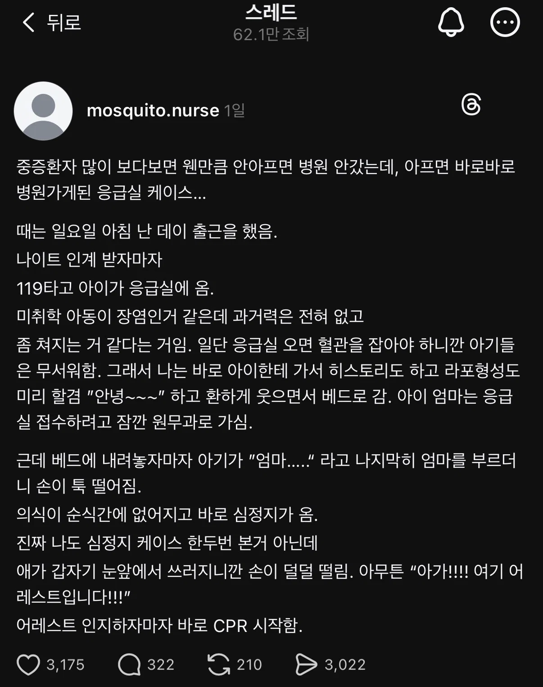
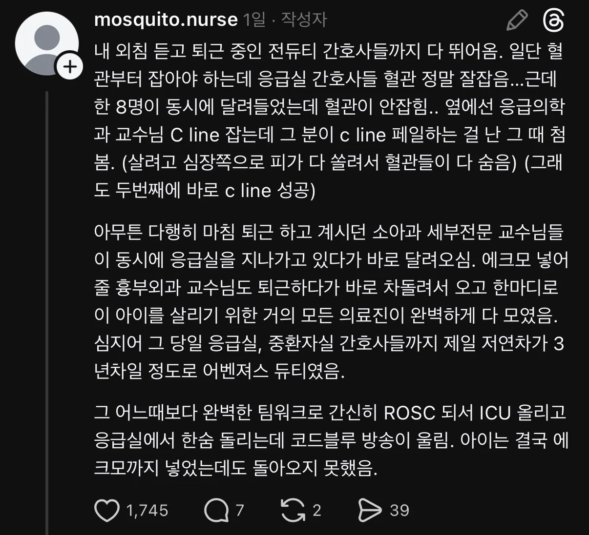
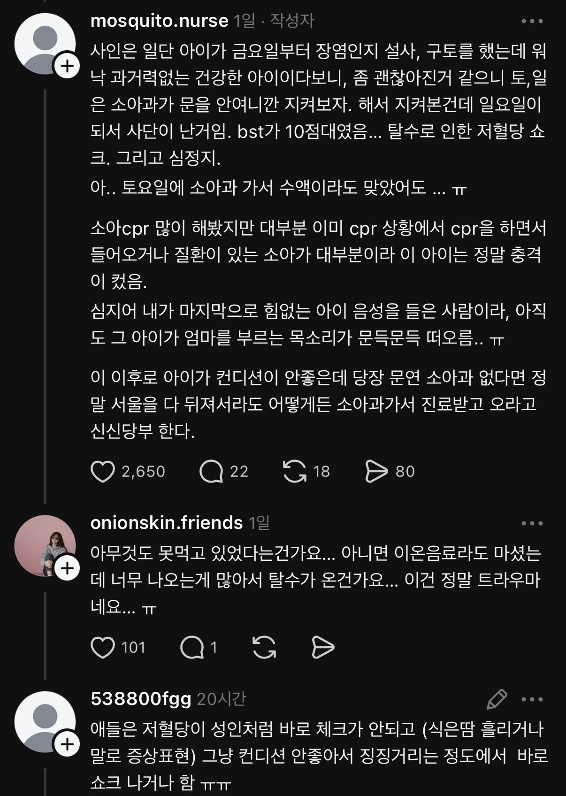
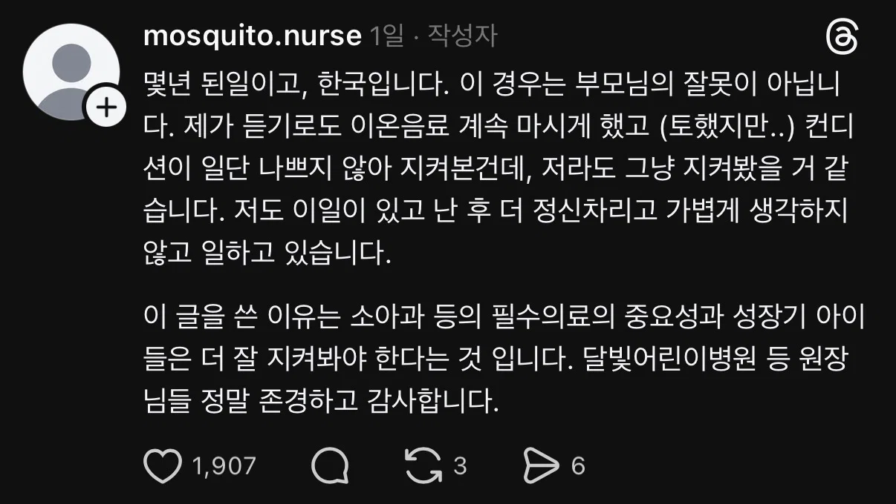

참 어렵구만;;;
이럴때 델몬트 쥬스같은 가공과일음료에 설탕타서 마시면 혈당 겁나 빨리 올라옴
난 자식 키워서 그런가 이 글 너무 소름끼치고 무서워. 상상만해도 끔찍해 진짜... 난 전세계의 소아과에 종사하시는 의사,간호사선생님들 정말 감사하고 존경해.
병원에서 즉각적인 조치를 제대로 다 취했는데도 사망한건 충격이네
아기라서 글리코겐 저장량도 낮고 뇌 대사율도 높으니 더 빨리 안좋아졋을거같음 사실 어떤 원인이던 arrest는 중증이야,, 살려놨다고 정상이 된건 아니니까
하.... 진짜 너무 안타까운데......
하씨 눈앞에서 애기가 엄마... 하더니 바로 어레스트...
나같으면 간호사 일 더 못할거 같은데
의료종사자 여러분 힘내십쇼
어릴때 힘 없어서 널부러져있다가 엄마가 사온 아이스크림 먹으니까 바로 나은거 기억난다